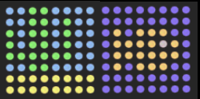

Réagir à l'humidité
Tu peux combiner ton relevé d'humidité avec une image pour indiquer également l'humidité d'une manière graphique. Par exemple, tu peux afficher un océan pour une humidité élevée, et un désert pour une faible humidité :

Au bas de ton programme, crée d'autres variables de couleur pour toutes les couleurs que tu souhaites utiliser dans tes images. Tu en as peut-être déjà défini certaines lors d'une étape précédente.
o=(255,130,0)
b=(0,0,255)
c=(0,150,255)
e=(80,80,80)
g=(0,255,0)
y=(255,255,0)
Comme précédemment, dessine tes images en créant d'abord une liste pour chacune d'entre elles, puis en indiquant la couleur que tu veux donner aux pixels de chaque élément de la liste.
wet = [
b, b, b, b, b, b, b, b,
b, b, b, b, b, b, b, b,
b, o, b, o, o, o, b, b,
b, o, o, o, o, e, o, b,
b, o, o, o, o, o, o, b,
b, o, b, o, o, o, b, b,
b, b, b, b, b, b, b, b,
b, b, b, b, b, b, b, b
]
dry = [
c, c, g, g, c, c, c, c,
c, c, g, g, c, g, c, c,
g, c, g, g, c, g, c, c,
g, c, g, g, c, g, c, c,
g, g, g, g, g, g, c, c,
c, c, g, g, c, c, c, c,
y, y, y, y, y, y, y, y,
y, y, y, y, y, y, y, y
]
Ajoute du code pour obtenir l'humidité :
humid = sense.get_humidity()
Décide maintenant quelle image tu veux afficher. Pour cet exemple, nous afficherons l'image wet (humide) si la lecture de l'humidité est de 40 % ou plus, et l'image dry (sec) si l'humidité est inférieure à 40 %.
humid = sense.get_humidity()
if humid >= 40:
sense.set_pixels(wet)
else:
sense.set_pixels(dry)
Utilise le curseur d'humidité pour définir une humidité sur l'émulateur. Exécute ton programme et vérifie que l'image que tu as choisie pour cette humidité est correctement affichée.
Modifie ton code pour que ton programme affiche l'humidité pour les astronautes de la manière que tu as choisie.
Teste ton code avec quelques réglages d'humidité différents (à l'aide du curseur) pour t'assurer qu'il fonctionne toujours correctement. Si tu as suivi l'exemple ci-dessus, une image est-elle affichée à la fois lorsque l'humidité est réglée à une valeur inférieure à 40 % et aussi quand elle est réglée à plus de 40 % ?